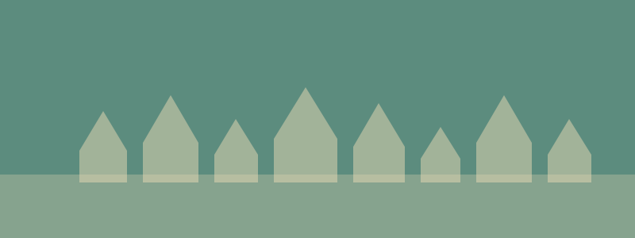

Day 6 — Alberobello + Locorotondo
Tuesday, May 26, 2026

PLACES & MAP LINKS — tap any place to open in Google Maps
🅿️ Parking — ~10:15 AM — 📍 Alberobello Parking Downtown
€6/day, gated, secure. 50m from old town.
📸 Sight — 📍 Aia Piccola (wheelchair-friendly trulli)
The accessible trulli district. Quieter, residential. Start here.
📸 Sight — 📍 Trullo Sovrano
Only two-story trullo. Small museum. ~€2-3 entry.
⛪ Sight — 📍 Chiesa di Sant'Antonio (trullo church)
Unique trullo-shaped church. Free, quick visit.
📸 Side-quest — 📍 Rione Monti (side-quest, steep)
Steep cobblestone trulli district — NOT wheelchair friendly. Maddison/Rob only.
🥪 Lunch — top pick — 📍 La Lira Focacceria
Famous puccia. 4.7★, 1,544 reviews. Walk-in, arrive 12:15 to beat rush.
🥪 Lunch backup — 📍 Apperò (lunch backup)
4.9★. Use if La Lira is full.
🥪 Lunch backup — 📍 La Pagnottella (third backup)
Make-your-own panini. Backup option.
🍦 Gelato — 📍 La Bottega del Gelato (Alberobello)
4.8★, made on-site. Pistachio + lemon top picks.
🅿️ Parking — 📍 Largo Mitrano Parking (Locorotondo)
2-3 min flat walk to centro storico.
📸 Sight — 📍 Villa Comunale Garibaldi (Locorotondo)
Panoramic terrace over Valle d'Itria. Wheelchair accessible.
🍦 Gelato — 📍 Cuor di Panna (Locorotondo gelato)
4.5★. Try the 'Locorotondo' flavor (cheesecake, cherry, pistachio).
SIDE QUESTS
⚡ 📍 Rione Monti trulli wander (Rob & Maddison only)
After lunch on Largo Martellotta, parents stay at a café in the square. Rob and Maddison explore the steep cobblestone Rione Monti district. Return to the same café.
⚡ 📍 Belvedere Santa Lucia viewpoint (Rob & Maddison only)
After getting gelato together, Rob/Maddison climb stairs to the Belvedere for the best photo of the trulli sea. Parents stay at the gelato shop.
⚡ 📍 Locorotondo white alley loop (Rob & Maddison only)
Parents stay at the gelato shop while Rob and Maddison wander the spiraling white alleys. Return to the same spot.
CONTACTS
Casa Amatulli: RULED OUT — not accessible
NOTES
- Aia Piccola = wheelchair-friendly district. Rione Monti is steep cobblestone, side-quest only.
- La Lira has 4 outdoor tables on Largo Martellotta plaza. Counter order. Arrive early.
- Light dinner at Borgobianco in the evening — no reservation needed.
- Public bathroom at Largo Martellotta (clean, daytime hours).